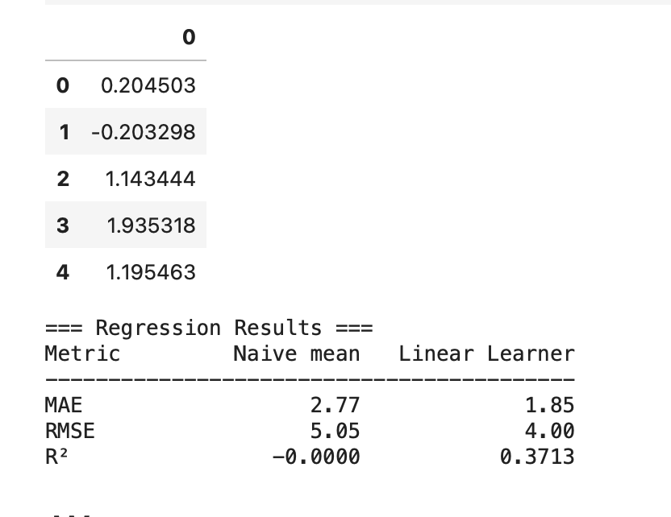

NYC 311 Ticket Resolution Time Prediction
Built an end-to-end machine learning pipeline on AWS to predict how long NYC 311 complaints take to resolve. Used Amazon S3 for data storage, AWS Athena for querying, and Amazon SageMaker to train and deploy a linear regression model on 170k+ service requests across 15 city agencies.
More details
Problem
As part of a cloud computing course project, I worked with a simulated agency operations scenario: given a 311 complaint at the moment it is filed, can we predict how long it will take to resolve? The dataset was a 170k-record instructor-provided sample of real NYC Open Data complaints, used to practice building end-to-end ML pipelines in a cloud environment.
Approach
Pulled data from S3 using Athena SQL queries and engineered features including agency, borough, complaint type, zip code, day of week, hour of day, and same-day complaint volume. Trained a SageMaker Linear Learner estimator (regressor) on an 80/20 train/test split, then evaluated against a naive baseline using Batch Transform. The focus was on learning the full AWS ML workflow, from raw data in S3 through model training and evaluation on SageMaker.
Results & Impact
The SageMaker Linear Learner model achieved an MAE of 1.85 days and RMSE of 4.00 days, with an R² of 0.37, an improvement over the naive mean baseline (MAE 2.77, RMSE 5.05). The project demonstrates a full cloud ML workflow from raw S3 data through SageMaker training and Batch Transform inference.